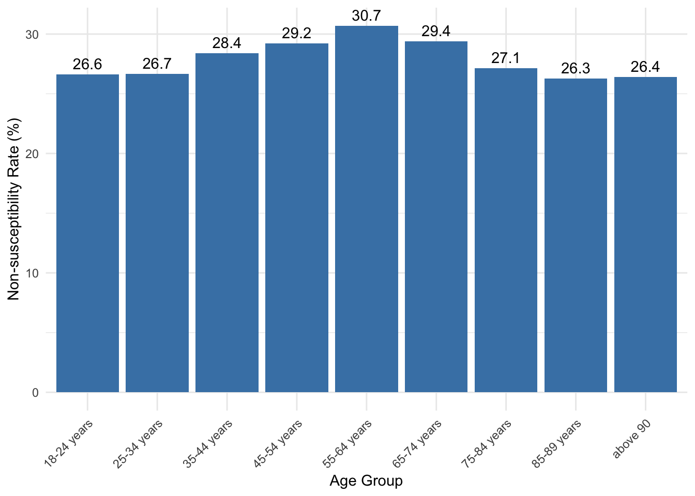
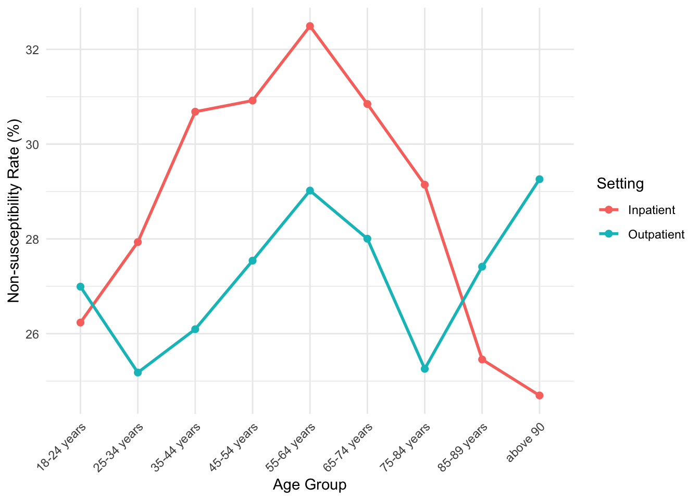

Code
library(tidyverse)Warning: package 'dplyr' was built under R version 4.4.3Code
library(car) # VIF ke liye
library(gtsummary)Warning: package 'gtsummary' was built under R version 4.4.3ARMD Dataset Analysis
library(tidyverse)Warning: package 'dplyr' was built under R version 4.4.3library(car) # VIF ke liye
library(gtsummary)Warning: package 'gtsummary' was built under R version 4.4.3Trimethoprim/sulfamethoxazole (TMP/SMX) remains a first-line empiric agent for uncomplicated urinary tract infections, but rising resistance among uropathogens threatens its clinical utility. Escherichia coli, the most common cause of community- and hospital-acquired UTIs, shows variable resistance patterns that may be influenced by both patient-level factors (such as age) and setting-level factors (such as inpatient versus outpatient care).
This analysis examines whether patient age group and clinical setting (inpatient vs. outpatient) are independently associated with antibiotic resistance among Escherichia coli urinary isolates, using the Antibiotic Resistance Microbiology Dataset, a de-identified EHR-derived resource (ARMD; Nateghi Haredasht et al., 2025).
cohort <- read_csv("microbiology_cultures_cohort.csv", show_col_types = FALSE)
demographics <- read_csv("microbiology_cultures_demographics.csv", show_col_types = FALSE)We restrict the cohort to E. coli urine culture isolates tested against Trimethoprim/Sulfamethoxazole (TMP/SMX), join demographic information, and apply exclusion criteria (missing age, missing clinical setting, or inconclusive/null susceptibility results).
final_data <- cohort %>%
filter(
culture_description == "URINE",
organism == "ESCHERICHIA COLI",
antibiotic == "Trimethoprim/Sulfamethoxazole",
susceptibility %in% c("Susceptible", "Resistant", "Intermediate")
) %>%
left_join(demographics %>% select(order_proc_id_coded, age, gender),
by = "order_proc_id_coded") %>%
filter(!is.na(age), ordering_mode != "Null") %>%
mutate(
resistant_outcome = if_else(susceptibility %in% c("Resistant", "Intermediate"), 1, 0)
)
nrow(final_data)[1] 56379final_data <- final_data %>%
mutate(outcome_label = if_else(resistant_outcome == 1, "Non-susceptible", "Susceptible"))
final_data %>%
select(age, ordering_mode, outcome_label) %>%
tbl_summary(
by = outcome_label,
label = list(age ~ "Age Group", ordering_mode ~ "Clinical Setting")
) %>%
add_overall() %>%
add_p()| Characteristic | Overall N = 56,3791 |
Non-susceptible N = 15,8781 |
Susceptible N = 40,5011 |
p-value2 |
|---|---|---|---|---|
| Age Group | <0.001 | |||
| 18-24 years | 4,797 (8.5%) | 1,276 (8.0%) | 3,521 (8.7%) | |
| 25-34 years | 6,833 (12%) | 1,821 (11%) | 5,012 (12%) | |
| 35-44 years | 5,736 (10%) | 1,629 (10%) | 4,107 (10%) | |
| 45-54 years | 6,422 (11%) | 1,876 (12%) | 4,546 (11%) | |
| 55-64 years | 7,590 (13%) | 2,329 (15%) | 5,261 (13%) | |
| 65-74 years | 9,449 (17%) | 2,778 (17%) | 6,671 (16%) | |
| 75-84 years | 9,028 (16%) | 2,451 (15%) | 6,577 (16%) | |
| 85-89 years | 3,508 (6.2%) | 922 (5.8%) | 2,586 (6.4%) | |
| above 90 | 3,016 (5.3%) | 796 (5.0%) | 2,220 (5.5%) | |
| Clinical Setting | <0.001 | |||
| Inpatient | 28,788 (51%) | 8,416 (53%) | 20,372 (50%) | |
| Outpatient | 27,591 (49%) | 7,462 (47%) | 20,129 (50%) | |
| 1 n (%) | ||||
| 2 Pearson’s Chi-squared test | ||||
model2 <- glm(resistant_outcome ~ age + ordering_mode, data = final_data, family = "binomial")
tbl_regression(model2, exponentiate = TRUE, label = list(age ~ "Age Group", ordering_mode ~ "Clinical Setting"))| Characteristic | OR | 95% CI | p-value |
|---|---|---|---|
| Age Group | |||
| 18-24 years | — | — | |
| 25-34 years | 1.00 | 0.92, 1.09 | >0.9 |
| 35-44 years | 1.10 | 1.01, 1.20 | 0.036 |
| 45-54 years | 1.14 | 1.05, 1.24 | 0.002 |
| 55-64 years | 1.23 | 1.13, 1.33 | <0.001 |
| 65-74 years | 1.15 | 1.07, 1.25 | <0.001 |
| 75-84 years | 1.03 | 0.95, 1.12 | 0.4 |
| 85-89 years | 0.98 | 0.89, 1.08 | 0.6 |
| above 90 | 0.98 | 0.88, 1.08 | 0.7 |
| Clinical Setting | |||
| Inpatient | — | — | |
| Outpatient | 0.89 | 0.86, 0.92 | <0.001 |
| Abbreviations: CI = Confidence Interval, OR = Odds Ratio | |||
vif(model2) GVIF Df GVIF^(1/(2*Df))
age 1.005692 8 1.000355
ordering_mode 1.005692 1 1.002842Given a statistically significant age × clinical setting interaction (likelihood ratio test, p < 0.001), we present age-specific odds ratios stratified by clinical setting.
model3 <- glm(resistant_outcome ~ age * ordering_mode, data = final_data, family = "binomial")
anova(model2, model3, test = "Chisq")Analysis of Deviance Table
Model 1: resistant_outcome ~ age + ordering_mode
Model 2: resistant_outcome ~ age * ordering_mode
Resid. Df Resid. Dev Df Deviance Pr(>Chi)
1 56369 66931
2 56361 66893 8 38.645 5.719e-06 ***
---
Signif. codes: 0 '***' 0.001 '**' 0.01 '*' 0.05 '.' 0.1 ' ' 1model_ip <- glm(resistant_outcome ~ age,
data = filter(final_data, ordering_mode == "Inpatient"),
family = "binomial")
model_op <- glm(resistant_outcome ~ age,
data = filter(final_data, ordering_mode == "Outpatient"),
family = "binomial")
tbl_ip <- tbl_regression(model_ip, exponentiate = TRUE, label = list(age ~ "Age Group")) %>%
modify_header(estimate ~ "**Inpatient OR**")
tbl_op <- tbl_regression(model_op, exponentiate = TRUE, label = list(age ~ "Age Group")) %>%
modify_header(estimate ~ "**Outpatient OR**")
tbl_merge(list(tbl_ip, tbl_op), tab_spanner = c("**Inpatient**", "**Outpatient**"))| Characteristic |
Inpatient
|
Outpatient
|
||||
|---|---|---|---|---|---|---|
| Inpatient OR | 95% CI | p-value | Outpatient OR | 95% CI | p-value | |
| Age Group | ||||||
| 18-24 years | — | — | — | — | ||
| 25-34 years | 1.09 | 0.97, 1.22 | 0.14 | 0.91 | 0.81, 1.03 | 0.13 |
| 35-44 years | 1.24 | 1.10, 1.40 | <0.001 | 0.95 | 0.84, 1.08 | 0.5 |
| 45-54 years | 1.26 | 1.12, 1.41 | <0.001 | 1.03 | 0.91, 1.16 | 0.7 |
| 55-64 years | 1.35 | 1.21, 1.52 | <0.001 | 1.11 | 0.99, 1.24 | 0.086 |
| 65-74 years | 1.25 | 1.13, 1.40 | <0.001 | 1.05 | 0.94, 1.18 | 0.4 |
| 75-84 years | 1.16 | 1.04, 1.29 | 0.010 | 0.91 | 0.82, 1.02 | 0.12 |
| 85-89 years | 0.96 | 0.84, 1.10 | 0.6 | 1.02 | 0.88, 1.18 | 0.8 |
| above 90 | 0.92 | 0.80, 1.06 | 0.2 | 1.12 | 0.95, 1.31 | 0.2 |
| Abbreviations: CI = Confidence Interval, OR = Odds Ratio | ||||||
final_data %>%
group_by(age) %>%
summarise(resistance_rate = mean(resistant_outcome) * 100) %>%
ggplot(aes(x = age, y = resistance_rate)) +
geom_col(fill = "steelblue") +
geom_text(aes(label = round(resistance_rate, 1)), vjust = -0.5) +
labs(x = "Age Group", y = "Non-susceptibility Rate (%)") +
theme_minimal() +
theme(axis.text.x = element_text(angle = 45, hjust = 1))
final_data %>%
group_by(age, ordering_mode) %>%
summarise(resistance_rate = mean(resistant_outcome) * 100, .groups = "drop") %>%
ggplot(aes(x = age, y = resistance_rate, color = ordering_mode, group = ordering_mode)) +
geom_line(linewidth = 1) +
geom_point(size = 2) +
labs(x = "Age Group", y = "Non-susceptibility Rate (%)", color = "Setting") +
theme_minimal() +
theme(axis.text.x = element_text(angle = 45, hjust = 1))
The final analytic cohort included 56,379 TMP/SMX susceptibility tests among E. coli urinary isolates, of which 15,878 (28.2%) were non-susceptible (resistant or intermediate) and 40,501 (71.8%) were susceptible. Age group distribution was fairly even across the nine strata, with the largest proportion of tests occurring in the 65–74 year group (17%). The cohort was nearly evenly split by clinical setting (51% inpatient, 49% outpatient). Both age group and clinical setting were significantly associated with non-susceptibility in bivariate analysis (both χ² p < 0.001; Table 1).
In the adjusted multivariable logistic regression model (Table 2), age group was independently associated with TMP/SMX resistance relative to the 18–24 year reference group, with odds increasing through mid-adulthood and peaking at 55–64 years (OR = 1.23, 95% CI 1.13–1.33, p < 0.001), before declining toward the null in the oldest age groups (85–89 years: OR = 0.98; above 90: OR = 0.98). Outpatient setting was associated with lower odds of resistance compared to inpatient setting (OR = 0.89, 95% CI 0.86–0.92, p < 0.001).
A likelihood ratio test comparing the main-effects model to a model including an age × clinical setting interaction term was significant (Deviance = 38.65, df = 8, p < 0.001), indicating that the effect of age on resistance differs by setting. Age-stratified analysis (Table 3) confirmed this: among inpatients, resistance odds rose sharply and significantly with age, peaking at 55–64 years (OR = 1.35, 95% CI 1.21–1.52, p < 0.001) and remaining elevated through 75–84 years (OR = 1.16, p = 0.010). Among outpatients, no age group reached statistical significance at the conventional α = 0.05 threshold, with all confidence intervals for the 95% CIs crossing 1 (e.g., 55–64 years: OR = 1.11, 95% CI 0.99–1.24, p = 0.086). This pattern indicates that the age-related increase in TMP/SMX resistance is driven primarily by the inpatient subgroup, and is largely attenuated or absent among outpatients.
TMP/SMX resistance in E. coli urinary isolates was significantly associated with both age and clinical setting, but the two didn’t act independently — the age-related rise in resistance was really an inpatient effect, peaking around 55–64 years, while outpatient resistance stayed flat across age groups. This means setting should be factored in alongside age when thinking about empiric TMP/SMX use, rather than treating age as a uniform risk factor. As with any EHR-derived dataset, these findings show association, not causation, and would benefit from validation using data on prior antibiotic exposure and length of stay.